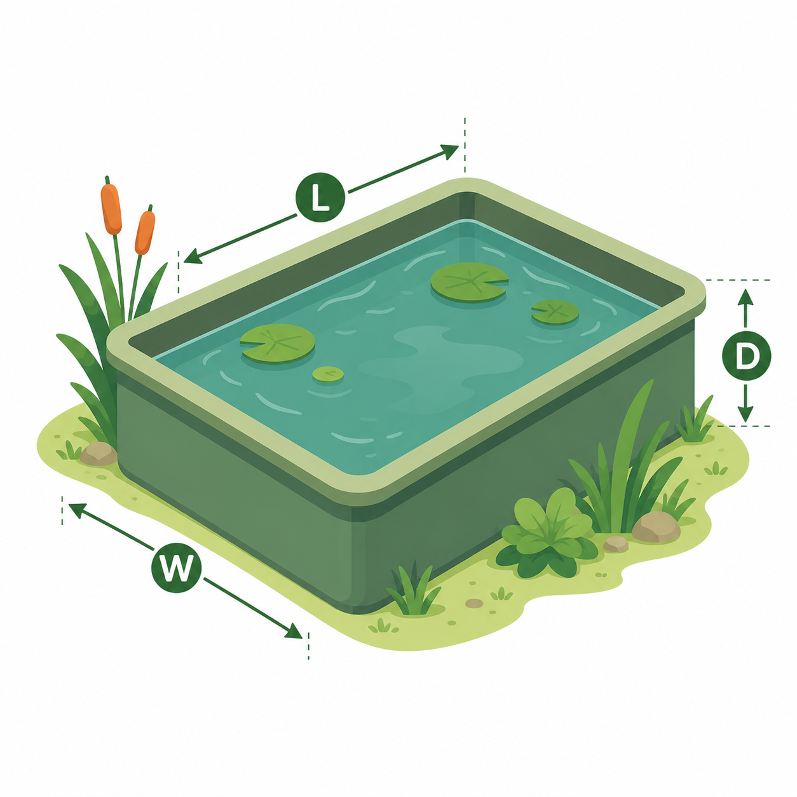
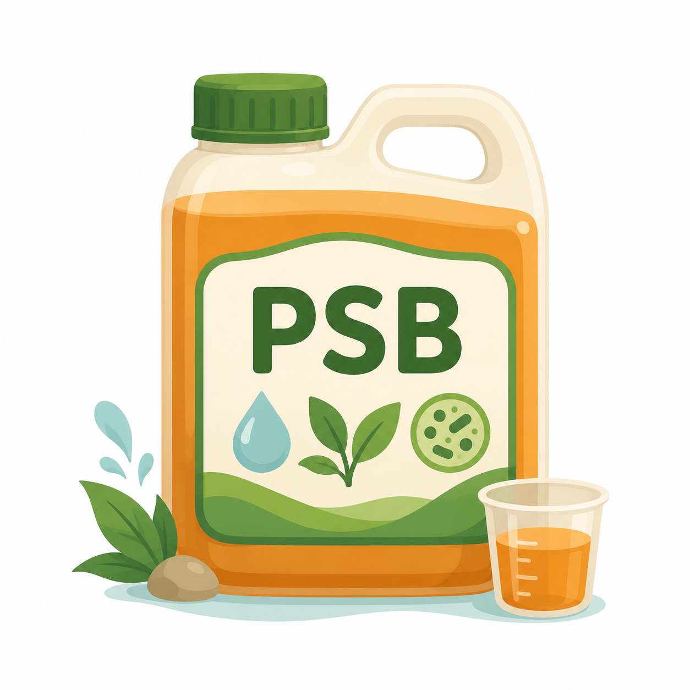

คำนวณ N_waste และปริมาณ PSB
เครื่องมือช่วยจัดการคุณภาพน้ำสำหรับฟาร์มกบ
1
ข้อมูลบ่อ
บันทึกชื่อและขนาดบ่อไว้ เพื่อไม่ต้องกรอกขนาดบ่อใหม่ทุกวัน
2
ข้อมูลการให้อาหาร
kg/day
%
3
ขนาดบ่อ

กรอกขนาดบ่อและระดับความลึกของน้ำ เพื่อคำนวณปริมาตรน้ำในบ่อ
m
m
m
ผลการคำนวณ
สรุปข้อมูลสำหรับการจัดการบ่อ
N_waste
-
kg/day
-
g/day
ระดับของเสีย
-
ประเมินจากค่า N_waste
ปริมาตรน้ำในบ่อ
-
m³
เท่ากับ
-
ลิตร

ปริมาณ PSB ที่แนะนำ
-
ml
คำนวณจากเกณฑ์เชิงประจักษ์ของโครงการ
เกณฑ์การคำนวณ
PSB = N_waste × ปริมาตรน้ำในบ่อ
แนวโน้มย้อนหลัง
ติดตามการเปลี่ยนแปลงของแต่ละบ่อ
N_waste
ของเสียไนโตรเจนย้อนหลัง
kg/day
ยังไม่มีข้อมูลสำหรับแสดงกราฟ
ปริมาณ PSB
ปริมาณ PSB ที่คำนวณย้อนหลัง
ml
ยังไม่มีข้อมูลสำหรับแสดงกราฟ
กราฟแสดงข้อมูลที่บันทึกไว้ในอุปกรณ์นี้ โดยเรียงตามวันที่จากเก่าไปใหม่
ประวัติย้อนหลัง
ข้อมูลที่บันทึกไว้ในอุปกรณ์นี้
ยังไม่มีข้อมูลที่บันทึก